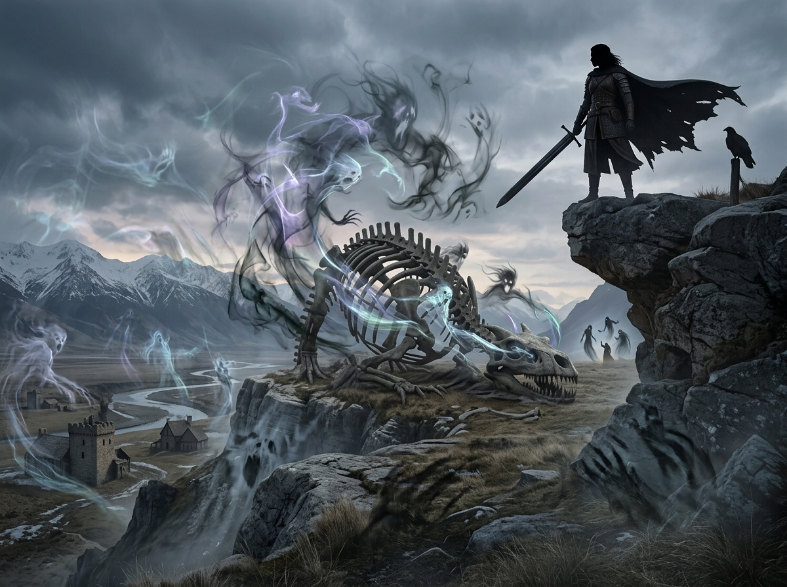
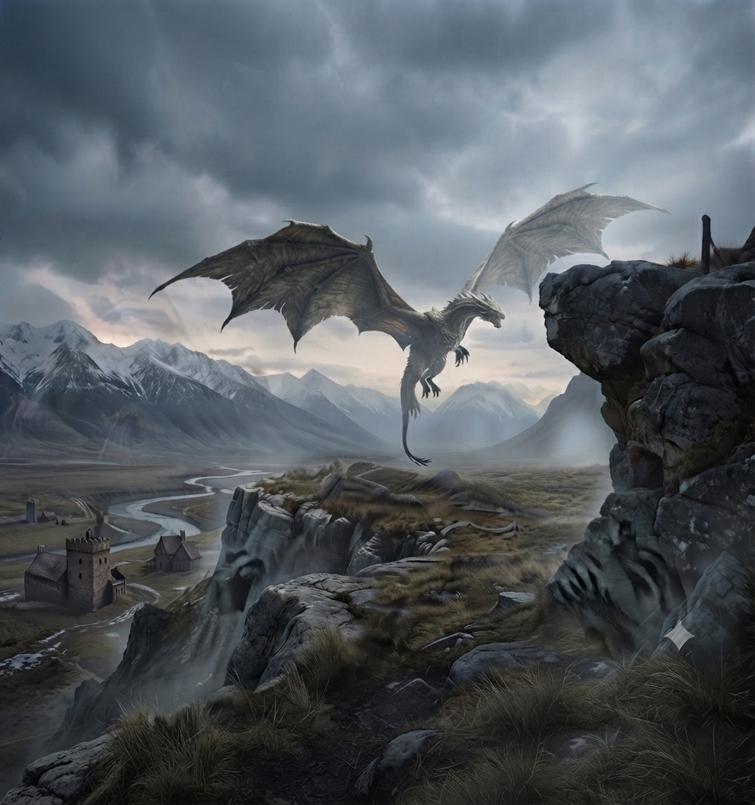
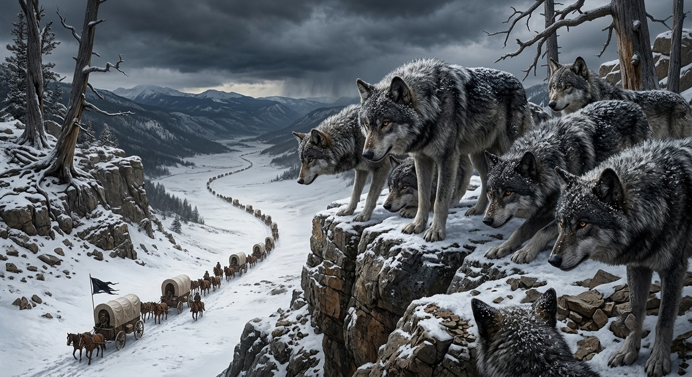
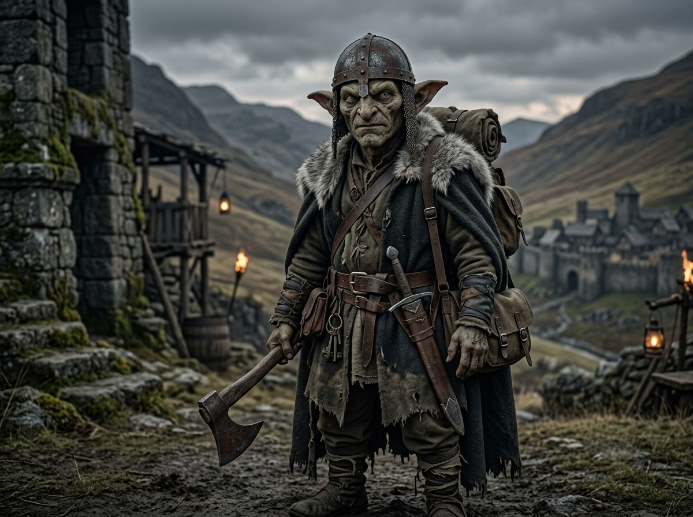

เรื่องเล่า ตำนานMedieval Online RP · Thailand


Lady Valestria
ความเชื่อและเทพเจ้า Lady Valestria: วีรสตรีผู้สังหารมังกรตัวสุดท้าย เชื่อว่าเป็นตัวแทนของ "ชีวิตและ ความตาย" มักปรากฏในงานศิลปะพร้อมดาบเทมพลาร์ขนาดใหญ่และปีกขนนก ดาบของเธอเชื่อว่ามีพลังทั้ง "สังหารและรักษา"
ปรากฏการณ์ธรรมชาติ The Wraithwind: พายุร้ายแรงเย็นยะเยือกที่โหมกระหน่ำตลอดกาลบนทวีป Veloria การจะเดินทางผ่านได้ต้องวางแผนอย่างหนัก ใช้กลุ่มคนจำนวนมาก ม้าลากโครงสร้างไม้เสริมความแข็งแรง และคบเพลิงให้ความอบอุ่นตลอดเวลา

มังกร (Dragons)
สถานะปัจจุบัน: ถูกเชื่อว่า สูญพันธุ์ไปแล้ว มานานอย่างน้อยหนึ่งถึงสองร้อยปี โดยตำนานระบุว่ามังกรตัวสุดท้ายถูกสังหารโดยวีรสตรีโบราณนามว่า Lady Valestria (Dragonsbane) ปัจจุบันเหลือเพียงเศษซากกะโหลกและกระดูกไม่กี่ชิ้นที่ถูกเก็บรักษาและคุ้มกันอย่างเข้มงวดในฐานะโบราณวัตถุในบางอาณาจักร
ลักษณะในอดีต: เป็นสิ่งมีชีวิตขนาดมหึมาที่พ่นไฟได้ ปีกขนาดใหญ่สร้างลมรุนแรงจนต้นไม้โค้งงอ ในอดีตมังกรแห่ง Veloria มักจะบินอยู่เหนือพายุ Wraithwinds เพื่ออาศัยกระแสลมช่วยพยุงตัวในการลอยตัว และจะลงมาบนพื้นดินเฉพาะตอนออกล่าเพราะความหิวเท่านั้น

ไรธ์วูล์ฟ (Wraithwolves)
ถิ่นที่พบ: มีถิ่นกำเนิดอยู่บนทวีป Veloria โดยมักอาศัยอยู่ในเขตพายุรุนแรง Wraithwinds และแทบไม่เคยปรากฏตัวนอกเขตนี้เลย
ลักษณะและพฤติกรรม: เป็นหมาป่าสายพันธุ์หายากที่มีขนาดใหญ่กว่าหมาป่าทั่วไปอย่างชัดเจน มีกล้ามเนื้อหนาแน่น หนังและขนหนาหนักเพื่อทนความหนาวจัด มักล่าเป็นฝูงอย่างมีระเบียบตามทิศทางลมเพื่อลดแรงต้านพายุ ดุร้ายและหวงอาณาเขตมาก มักเข้าโจมตีทำลายฐานพักและขบวนนักเดินทาง ในบางครั้งอาจพบตัวเดี่ยวๆ หลุดมานอกเขตพายุ ซึ่งมักเป็นตัวที่ถูกขับออกจากฝูงหรือหลงทาง

กอบลิน (Goblins)
ถิ่นที่พบ: พบครั้งแรกบนทวีป Veloria โดยมักจะเดินทางจากพื้นที่โล่งในพายุที่ชื่อว่า Bogmire เข้าสู่เขตของอาณาจักร Rivenvale และ Frostmarch
ลักษณะและพฤติกรรม: ในแวบแรกดูคล้ายมนุษย์เพราะมีสองแขนสองขา แต่แท้จริงแล้วใกล้เคียงกับสัตว์ป่าที่มีไหวพริบสูงและเจ้าเล่ห์คล้ายนกกินซาก พวกมันเรียนรู้เร็วและสามารถเลียนเสียงพูดของมนุษย์ได้ แต่พวกมันพูดโดยไม่ได้มีความรู้สึกจริงใจ แค่เลียนเสียงเพื่อหาอาหาร ความปลอดภัย หรือหลอกให้มนุษย์สงสารเท่านั้น พวกมันขับเคลื่อนด้วยสัญชาตญาณ ความหิว และความก้าวร้าว สามารถปล้นและฆ่าได้โดยปราศจากความเกลียดชังหรือความเมตตา